Land-use change
Gustav Engström
PB-workshop, 2016
What is land-use change?
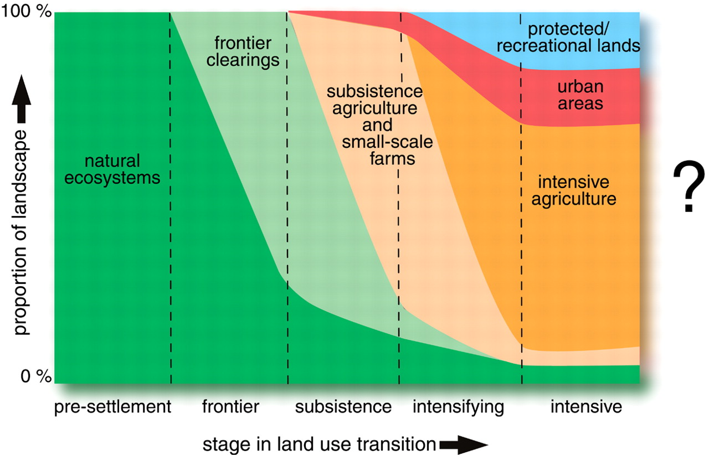 Fig. 1. Land-use transitions. Transitions in land-use activities that may be experienced within a given region over time (Foley etal 2005).What is the problem?
- Leads to changes in greenhouse gas emissions from the land (especially CO2)
- Destroys forest ecosystems and services provided e.g. through conversion of forests to croplands
- Changes in energy and water balance at land surface => climate impact
Land-use and climate change
 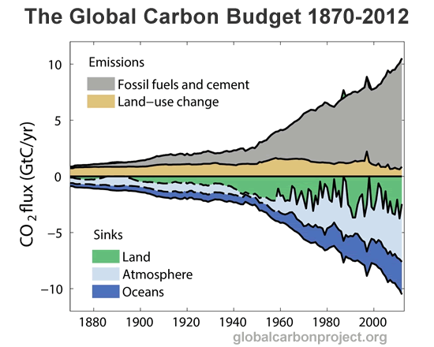
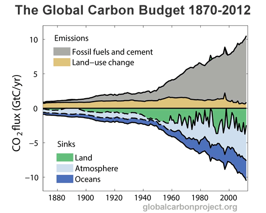
Land-use change and carbon emissions
- Conversion of land from natural vegetation to agriculture or pasturage releases carbon from vegetation and soils (Houghton et al., 1983)
- Deforested areas have a diminished capacity to act as a CO2 sink (Arora and Boer, 2010; Strassmann et al., 2008).
- Agriculture and pasturage emits CH4 and nitrous oxide (N2O), accelerates soil carbon loss (Lal, 2004, (Foley etal 2005)
Two-sided coin of land-use change
- Tropical forests are a source of carbon to the atmosphere today because of deforestation today
- Temperate forests are a sink for atmospheric carbon today because of past deforestation (they are today taking up again what they released yesterday).
Sources of emissions from land-use change
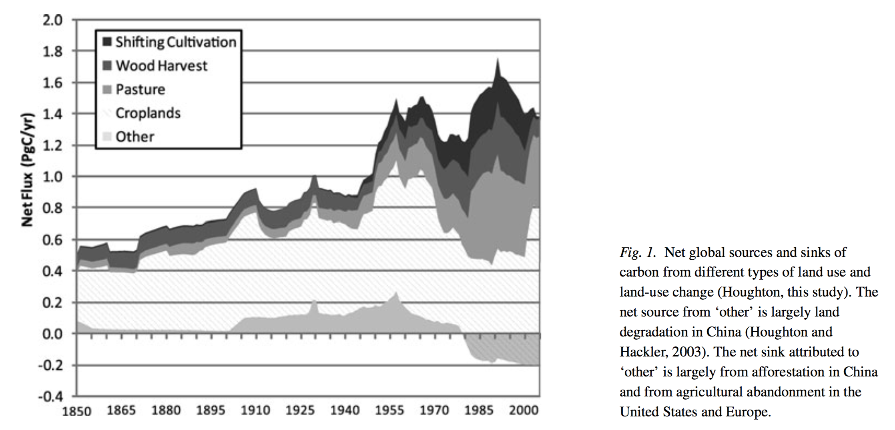Current state
- About 85 percent of Earth’s ice-free lands is covered by vegetation. Of the total ice-free land area (13,300 Mha), ≈ 4,000 Mha is suitable for rain-fed agriculture.
- The global non-cultivated area that is suitable for cropping while being non-forested, non-protected, and scarcely populated is estimated at 445 Mha globally.
(Lambin and Meyfroidt, 2010)
Altogether, agriculture occupies about 38% of Earth’s terrestrial surface—the largest use of land on the planet (Foley et. al. 2005).
Historical and recent trends...
The global expansion of croplands since 1850 has converted some 6 million km2 of forests/woodlands and 4.7 million km2 of savannas/grasslands/steppes. Within these categories, respectively, 1.5 and 0.6 million km2 of cropland has been abandoned (Ramankutty and Foley, 1999).
Conversion of forests and other ecosystems to agricultural land has occurred at an average rate of 0.8% yr-1 over the past 40–50 years and is the major global driver behind loss of ecosystem functioning and services (MEA 2005a).
Global greening...
Other indicators of an expanding biosphere...
|
 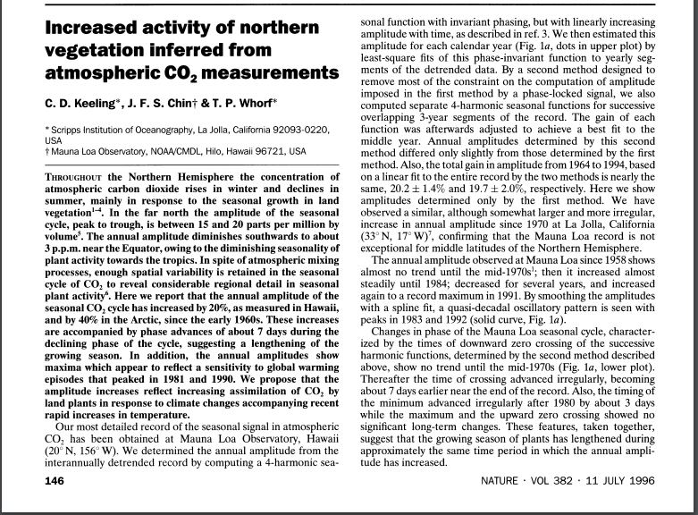
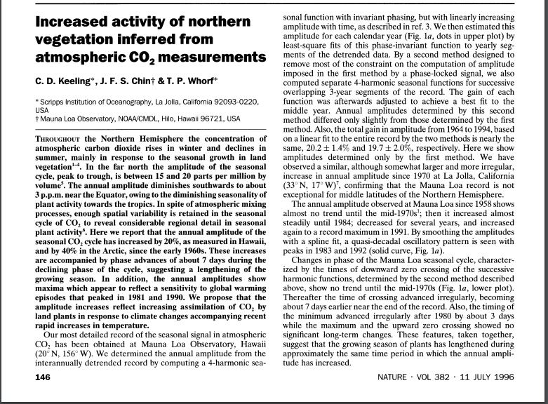
|
Peak farmland...
A Surprising Global Trend
|
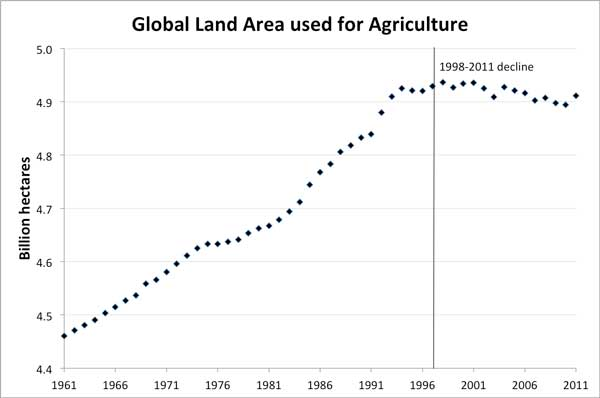 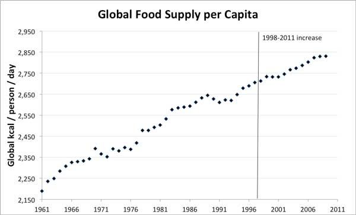 |
Important caveats...
- We don’t know whether this intensification was done sustainably or not i.e. what has happened to soil health and water quality
- Agricultural land use decline in much of the world (e.g., New Zealand, Mongolia, and Poland) hides significant agricultural expansion elsewhere (like Vietnam, Indonesia, and Argentina)
Projected change...
Demand for Agriculture and land
| 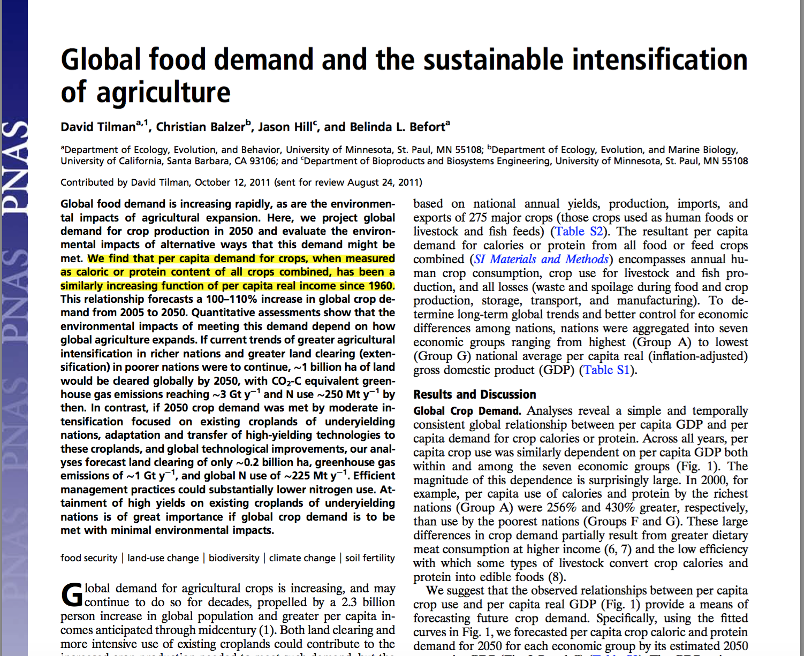 | Lambin and Meyfroidt (2010) 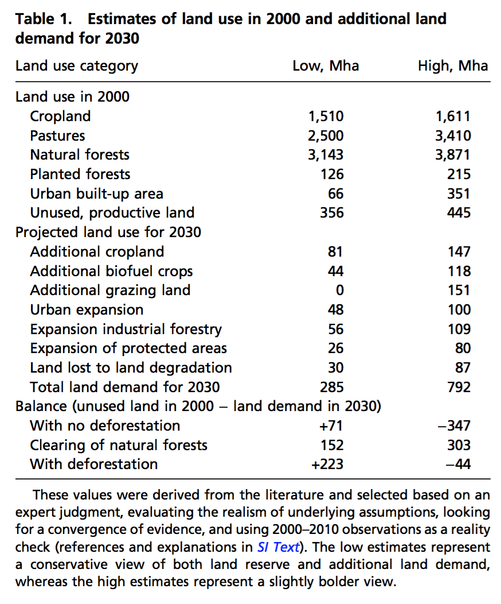 |
Proposed Planetary boundary...
Planetary boundary for land-system change
|
- 2009: no more than 15% of the global ice-free land surface should be converted to cropland = approximately 400 Mha further expansion. - 2015: The control variable has been changed from the amount of cropland to the amount of forest cover remaining. The biome-level boundary for tropical and boreal forests have been set at 85%, and the boundary for temperate forests has been proposed at 50% of potential forest cover, reflecting their respective influences on the climate system. |
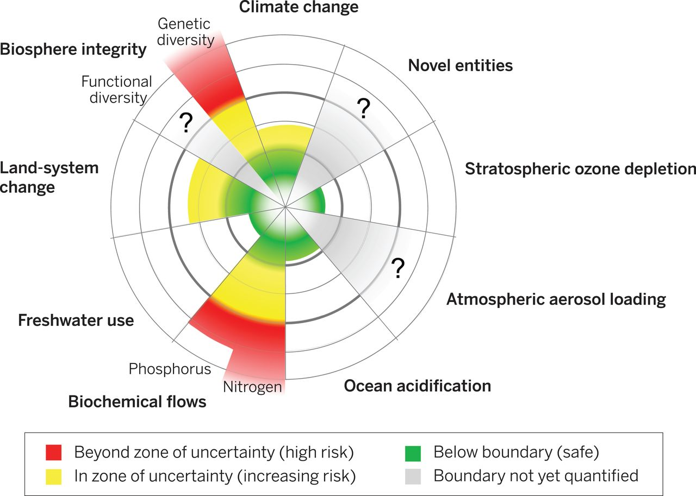 |
Policies...
Policies often proposed...
Two strategies are commonly proposed to control deforestation (Lambin and Meyfroidt, 2010):
- Land use zoning schemes: allocates land to restricted uses to ensure that valuable natural ecosystems are not converted
- Agricultural intensification: spares land for nature because higher yields decrease the area that needs to be put under agriculture to reach a given production level.
...both are generally considered to be under the control of national policies.
Example - Closing yield gaps
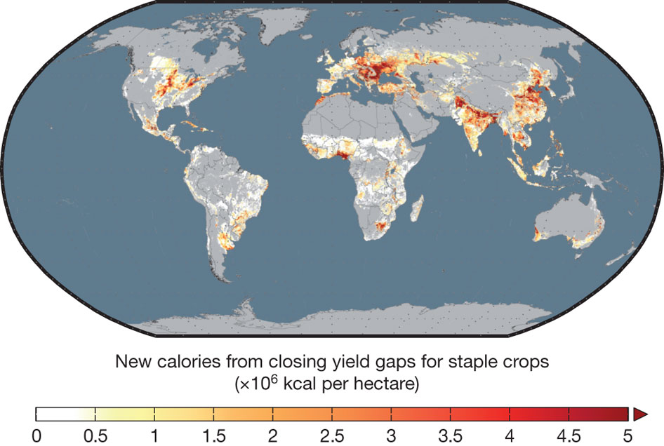 The figure shows the new calories that would be made available to the world from closing the yield gaps for 16 major crops: barley, cassava, groundnut, maize, millet, potato, oil palm, rapeseed, rice, rye, sorghum, soybean, sugarbeet, sugarcane, sunflower and wheat. This analysis shows that bringing the world’s yields to within 95% of their potential for these 16 important food and feed crops could add 2.3 billion tonnes (5 × 1015 kilocalories) of new crop production, representing a 58% increase (Foley, 2011).Various facts, relationships and land-use concepts...
Leakage
Land use zoning for nature conservation in a country may displace population and land use within that country or abroad, via migrations or by increasing imports of agricultural or wood products, thus shifting/increasing pressure on natural ecosystems elsewhere.
Rebound effect
Increased production efficiency lowers costs and in a competitive economy price of the agricultural commodity will fall. The overall impact on land-use thus depends on how this price change affects demand. Knowledge of relative strength of income and substitution elasticities are thus important for determining the demand response. In a not so competitive economy, more efficient agriculture raises profits and leads to an expansion of the cultivated area. Aggregate global scale data however, suggest that past agricultural intensification has indeed spared land for nature.
Income elasticities
USDA 2014 reports effects of a change in per capita income on global agricultural variables. For a 10-percent increase in global per capita income, consumption and production of major crops is projected to increase by approximately 3 percent. Crop yield increases by 3 percent in this scenario, and cropland area increases by less than 1 percent.
Trade effects
Agricultural intensification or land use zoning in one country may trigger compensating changes in trade flows and, thus, affect indirectly land use in other countries. However, trade also carries the potential to increase global land use efficiency by allowing for regional specialization in land use and productivity increases as a response to a global shortage of productive land.
Demand elasticities
The demand for staple crops for human consumption is relatively inelastic, the global demands for biofuels, meat, and luxury goods such as coffee are elastic (Lambin and Meyfroidt, 2010).
Indirect effects
When a bioenergy crop replaces a natural ecosystem, there is a direct land conversion. When it replaces a food crop in a field already under cultivation, or when crop production is diverted from the food market to the bioenergy market, the supply of the food crop decreases—e.g., for corn, sugarcane, potato, or wheat used for ethanol, or palm or rapeseed oil used for biodiesel. The market price for the replaced crop increases, thus causing more land to be allocated to that crop, which could negate climate benefits from biofuels (Lambin and Meyfroidt, 2010)
REDD (Reduced Emissions from Deforestation and Degradation)
One key issue for the implementation of REDD is how to address leakage of emissions. Without full participation of all countries in a forest conservation scheme, emission reductions in one location could result in increased emissions elsewhere. However, carbon leakage is not only relevant in the context of regionalized forest protection efforts. Another risk associated with a global REDD scheme that so far has not been quantified in the literature is the shift of land-use pressures to non-forest ecosystems (non-forest leakage) (Popp etal 2014).